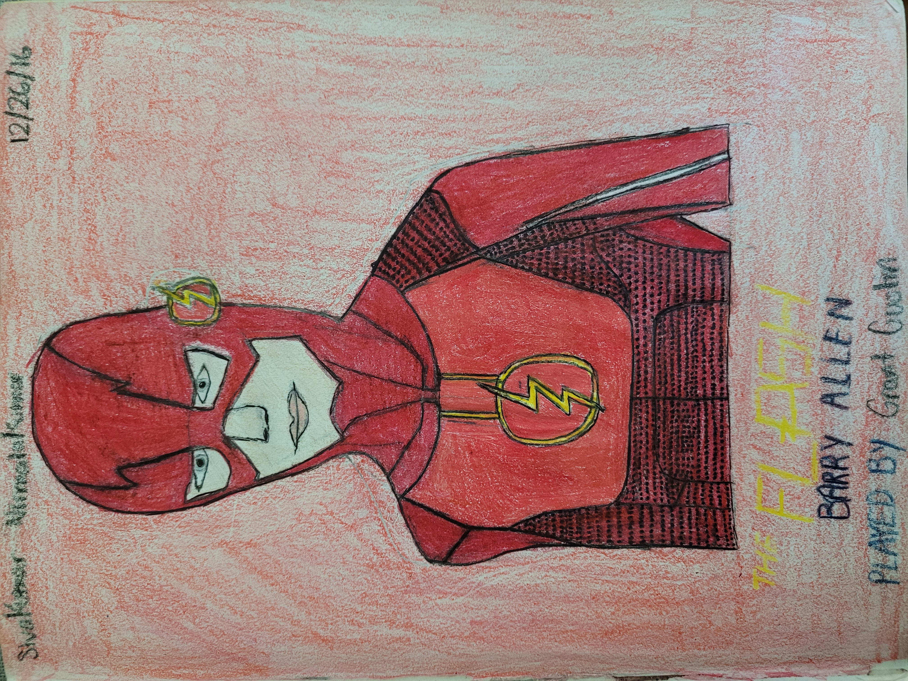
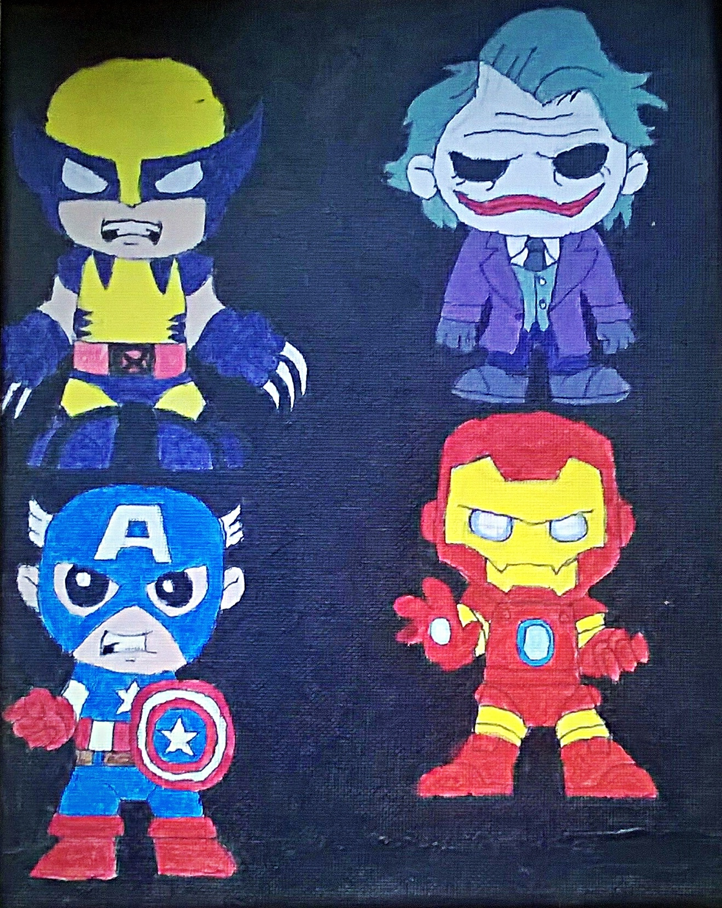
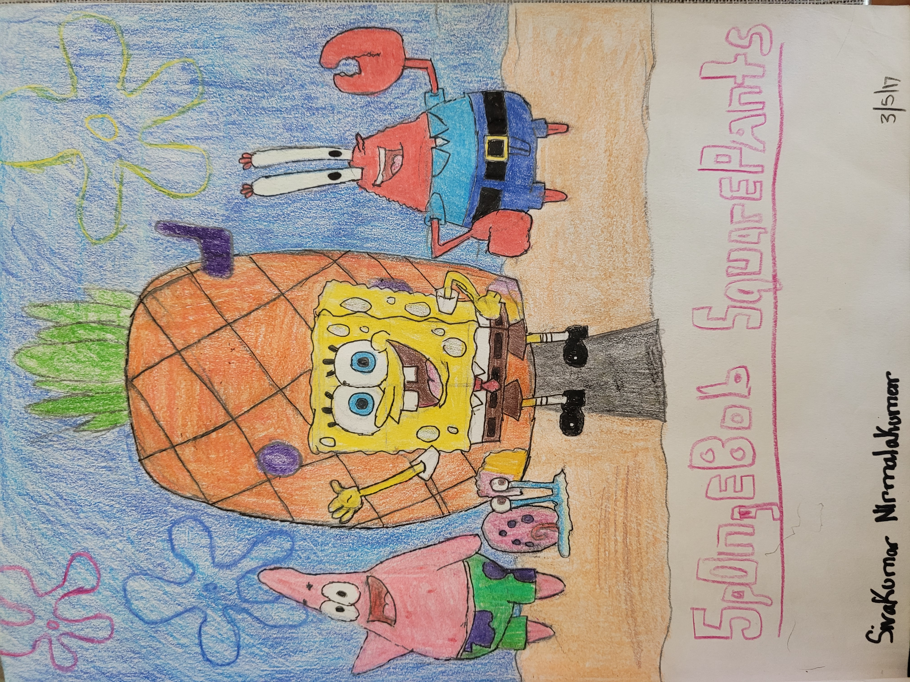
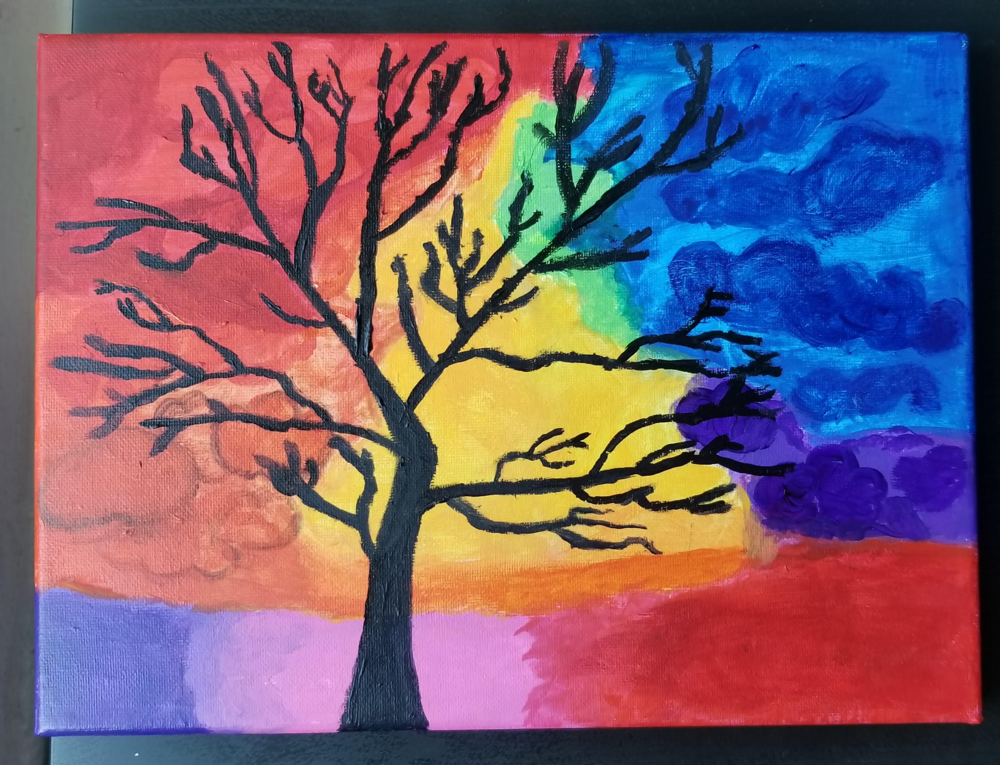
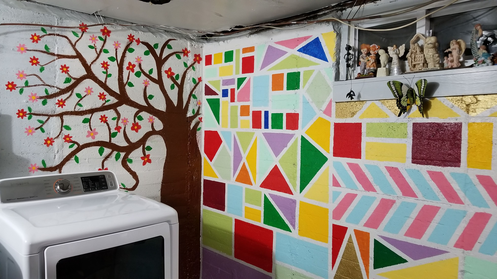

The Flash Drawing:
The first piece done for leisure in his new book during Christmas 2016, Shiva drew the Flash as it was his favorite DC character at the time.
Shiva used prismacolor pencils to draw out the hero, and being his first drawing, made some errors by applying too much pressure, and proportion issues.
As this was his first piece, Shiva had a lot to learn and improve upon if he wanted to get better in his crafts.
However, he felt that this piece was a good starting point, especially for his 12 year old mindset.
Shiva's brother was a great artist when he was a little kid, drawing various architectural, anime, and car-style drawings, along with origami he would create on his downtime.
Shiva's was also fascinated by various art and drawings he would see online and work on during elementary schools, for projects, family gifts, and leisure.

Marvel Painting:
Created in May 2017, Shiva drew out these Marvel characters as a gift for his brother in law's birthday:
Since Shiva was in the midst of using acrylics, he decided to use it to complete the drawing, as they were unique, dried quickly, and something he wanted to improve upon.
Although slightly skeptical of the results, the painting turned out great and his brother in law was proud!
Growing up, Shiva would take Art and Computer Lab courses in Elementary School, draw various things such as animals, vehicles, and foods.
His art was decent for his age, but he did not invest in it seriously, as this was only a pastime hobby.
He would take Arts and Crafts courses hosted by Michael's that would help further his love for Arts.

Cartoon Drawing:
Created in March 2017, Shiva created this piece simply out of boredom.
Using regular prismacolor pencils, Shiva would embark on drawing out a classic cartoon, that were part of many childhoods.
At home, he was occasionally viewed as SpongeBob due to his bright nature, giving Shiva an extra pull to draw.
After he finished the drawing, many praised Shiva for the 3-D like atmosphere of the characters and mostly realistic proportions.
The background was an afterthought and could've been drawn out better.
In Middle School, Shiva continued to draw and started painting canvases during his free time, but more seriously as he slowly started to value and become confident in his talent.
It was only until his Junior Year in Westbury High School, where Shiva's true colors in art, truly shined...


Forest Art:
Another piece out of boredom, Shiva used acrylic paint to create a colorful and nature-oriented piece, during the Summer of 2019.
Shiva and his mom decided to create geometric artwork, and a tree with flowers. This helped add character to a rather typically-boring environment in August 2020.
Links to this stage of drawing
What Are The 5 Basic Skills of Drawing?The 5 Key Differences between Acrylic vs Oil Paint